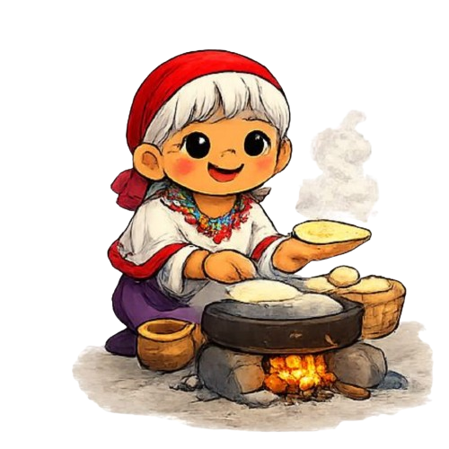

Aspectos economicos y sociales
Los tepehuanes, divididos en grupos del norte (Chihuahua) y del sur (principalmente en Durango, Nayarit, Zacatecas y Jalisco), sustentan su economía en la agricultura de autoconsumo (maíz y frijol). La ganadería,la recolección y elaboración de artesanías y el trabajo asalariado estacional. Socialmente,se organizan en rancherías dispersas mediante un sistema de autoridades tradicionales y el profundo culto a sus antepasados.